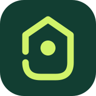

أنت غير متصل • البيانات المحفوظة متاحة

جوه
كل كيان أقرب ليك
كيان سيتي
خريطة واحدة، مشاوير أسهل
سوق جوه
أضف جوه للموبايل
♡
مشاويري
المصادر والتغطية
نسخة تجريبية
بنجهّز خريطتك…
العمارات والطرق والمواعيد في مكان واحد
خريطة كيان سيتي الموحدة
تحميل البيانات…
كل كيان
الياسمين
النرجس
+
−
◎
▧
إظهار على الخريطة
أرقام العمارات
الخدمات
خريطة الشوارع
شبكة الطرق
الياسمين
النرجس
⌖ خدمات
كبّر لإظهار أرقام العمارات
بيانات الخريطة ⓘ
×